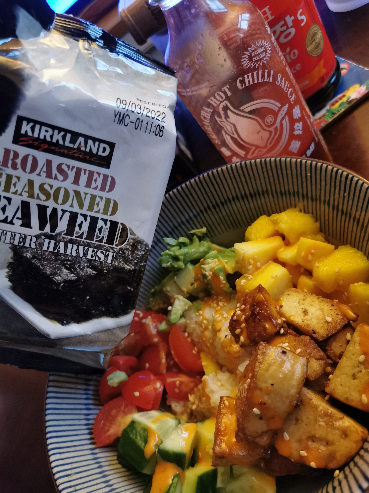

Vegan Poke Bowls

Description
I literally cannot fathom why these poke bowls are so good. To be perfectly honest, I don't know how 'authentic' these are or if they taste anything like traditional poke bowls, but they taste amazing.
My partner likes to say 'these taste way better than they have any right to' and I have to agree. Easiest dinner we make by far, healthy and tasty AF.
Ingredients
Makes enough for 2 depending on how big you like your portions (we like them big)
- 1.5 cups uncooked rice
- veggie stock cube
- butter (vegan/optional)
- 1 mango
- 1/2 a cucumber
- handful cherry tomatoes
- 1 avocado
- 1 block extra firm tofu
- 1 pack dried seaweed
- siracha to taste
- sesame oil to taste
- soy sauce to taste
- (if you don't want your poke bowls to be vegan you can add fried spam like my partner does)
Steps
- Cook rice - 1 part rice to 2 parts water with the stock cube and butter (if using) until all water is absorbed
- Cut tofu into small cubes and fry with whatever seasoning you like - I tend to use garlic powder, ginger powder, white pepper and chinese 5 spice with some soy sauce and mirin or rice vinegar
- Chop all the fruit and veggies up nice and small
- Place rice in a bowl and arrange fruit and veggies in a nice pretty circle on top as pictured above
- Top with siracha, sesame oil and soy sauce to taste (we use LOTS)
- Service with dried seaweed and enjoy!!